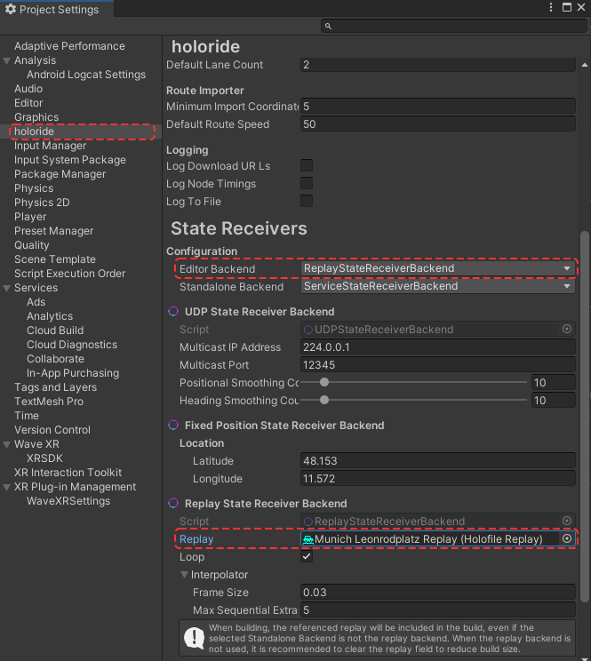
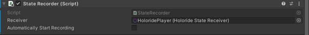

Replay Holo Files
Testing during development is highly important and the Elastic SDK provides the ability to test in-car experiences at your desk. This is possible by playing back replays of recorded or simulated vehicle localization data within the Unity Editor. All such replays are represented by Replay assets.
Playback
Replays are typically based on recorded .holo and .holo2 files. These file types contain the recorded motion data of real-world travel in a car.
A default replay over the full length of the recording will be automatically created for each .holo and .holo2 file imported into your Unity project.
It is possible to create further replays representing different time slices of the recordings.
Tip
Alternatively, @Holoride.ElasticSDK.Route assets can be used as a source for synthetic rides, with a subset of possible sensory data. A common source for such routes are .kml files and the @Holoride.ElasticSDK.RouteFromAddresses Scriptable Object. Route from Addresses assets can be created via the Create > holoride right-click context menu.
As with .holo and .holo2 files, multiple replays over varying time slices can be created based on the same route.
Replays are played back through the ReplayStateReceiverBackend. To use the ReplayStateReceiverBackend:
- select it in the StateReceiver for the context to use it in (editor and/or standalone).
- add a Replay of a .holo or .holo2 file to the Replay field in the inspector.
Note
You can download a variety of ride replay assets here: here.

Recording
In order to record your data at runtime, add the StateRecorder component to any GameObject in your Unity scene.
By default, recording will start automatically. If you prefer to start recording manually, untick the Automatically Start Recording checkbox on the component and call the StartRecording method when you wish to start recording.
The recording is automatically stopped when the component is disabled or the game stops.

The recording is stored in a file located in your application's persistent data path, in the /holoride/Recordings subdirectory. As with any other .holo file, it's Replay may be used with the ReplayStateReceiverBackend.
Note
You can learn more about the persistent data path in the Unity documentation.